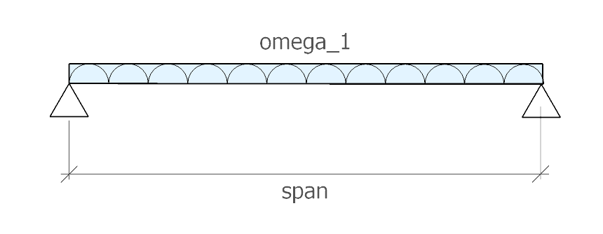
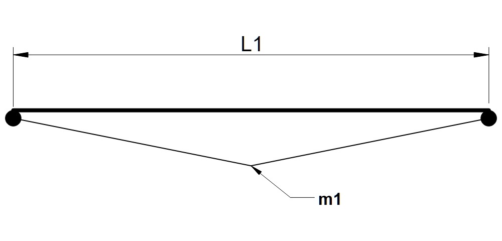
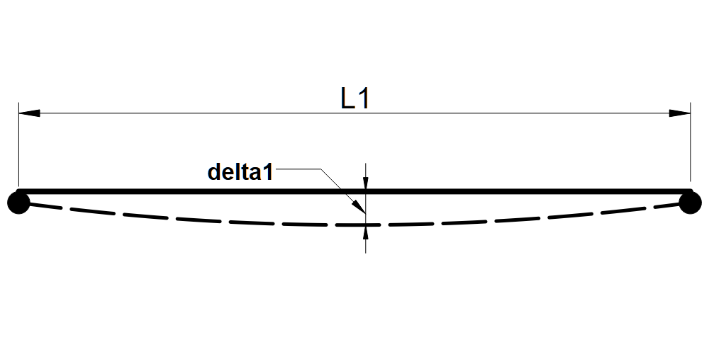

Example 1 - rivt Doc#
0.1-1 | Summary and Loads ================================================================================]
This rivt file example calculates the maximum stress and deflection in a simply supported, uniformly loaded beam using E-B theory [0.1.1] . It also serves as an annotated example of a single rivt doc with multiple sections that is not part of a report.
The example illustrates the use of some of the most common API functions, commands and tags. Further details are provided in the rivt user manual .
The file may be formatted as a text, PDF or HTML doc by changing the type parameter in the Doc API | PUBLISH | command at the end of each rivt file (rv.D()). Published files are found in the _published folder.
0.1-2 | Load Combinations#
Dead and live loads effects are taken from ASCE 7-05 [0.1.2]
Table 2.1: Load Effects (stored: t001-1.csv)
Equation No. |
Load Combination |
|---|---|
16-1 |
1.4(D+F) |
16-2 |
1.2(D+F+T) + 1.6(L+H) + 0.5(Lr or S or R) |
16-3 |
1.2(D+F+T) + 1.6(Lr or S or R) + (f1L or 0.8W) |
0.1-3 | Loads and Geometry#
Successive value definitions are formatted as a table. Variable values are defined with the define operator. The line tag [T] labels and numbers the table.
Table 3.1: Define Unit Loads
variable |
value |
[value] |
description |
|---|---|---|---|
D_1 |
3.80 p_sf |
0.18 kPA |
joists DL |
D_2 |
2.10 p_sf |
0.10 kPA |
plywood DL |
D_3 |
10.00 p_sf |
0.48 kPA |
partitions DL |
D_4 |
3.00 k_ft |
43.78 kN_m |
fixed machinery DL |
L_1 |
40.00 p_sf |
1.92 kPA |
ASCE7-O5 LL |
b_1 |
10.00 inch |
254.00 mm |
beam width |
h_1 |
18.00 inch |
457.20 mm |
beam depth |
E_1 |
29000.00 k_si |
199947.96 MPA |
modulus of elasticity |
Fb_1 |
20000.00 p_si |
137.90 MPA |
allowable stress |
The VALTABLE command reads variable values from a file in the rvsrc/data folder. The description is the table title, followed by the max column width.
Table 3.2: Beam Geometry (beam1.csv)
variable |
value |
[value] |
description |
|---|---|---|---|
spc_1 |
2.00 ft |
0.61 m |
beam spacing |
spn_1 |
16.00 ft |
4.88 m |
beam span |
{kind=link}

Fig. 3.1 - Beam Diagram#
Uniform Distributed Loads
Eq. 3.1: Dead load [ASCE7-05 2.3.2]
dl₁ = 1.2⋅(D₄ + spc₁⋅(D₁ + D₂ + D₃))
dl₁ = 3.64 k_ft [dl₁] = 53.09 kN_m | Dead load [ASCE7-05 2.3.2]
D₂ D₁ D₃ spc₁ D₄
—————————— ————————— ————————————— ———————————— ——————————————————
2.10 p_sf 3.80 p_sf 10.00 p_sf 2.00 ft 3.00 k_ft
————— ————— ————— ————— —————
plywood DL joists DL partitions DL beam spacing fixed machinery DL
—————————— ————————— ————————————— ———————————— ——————————————————
Eq. 3.2: Live load [ASCE7-05 2.3.2]
ll₁ = 1.6⋅L₁⋅spc₁
ll₁ = 0.13 k_ft [ll₁] = 1.87 kN_m | Live load [ASCE7-05 2.3.2]
spc₁ L₁
———————————— ———————————
2.00 ft 40.00 p_sf
————— —————
beam spacing ASCE7-O5 LL
———————————— ———————————
Eq. 3.3: Total load [ASCE7-05 2.3.2]
ω₁ = dl₁ + ll₁
ω₁ = 3.77 k_ft [ω₁] = 54.96 kN_m | Total load [ASCE7-05 2.3.2]
ll₁ dl₁
——————————————————— ———————————————————
128.00 ft·p_sf 3.64 k_ft
————— —————
Live load [ASCE7-05 Dead load [ASCE7-05
2.3.2] 2.3.2]
——————————————————— ———————————————————
0.1-4 | Beam Response#
The following lines import the beam geometry from an external file, calculate section properties from imported functions and calculate the maximum moment, bending stress and mid-span deflection.
Table 1: Beam functions (sectprop.py)
Function |
Docstring |
|---|---|
rectsect(b, d) |
section modulus of rectangle |
rectinertia(b, d) |
moment of inertia of rectangle |
midspan_delta(ln, w, e, i) |
mid-span deflection of simply supported beam with UDL |
Eq. 4.2: rectangle - S (sectprop.py)
section₁ = rectsect(b₁, h₁)
section₁ = 540.00 in3 [section₁] = 8849.01 cm3 | rectangle - S (sectprop.py)
b₁ h₁
—————————— ——————————
10.00 inch 18.00 inch
————— —————
beam width beam depth
—————————— ——————————
Eq. 4.3: rectangle - I (sectprop.py)
inertia₁ = rectinertia(b₁, h₁)
inertia₁ = 4860.0 in4 [inertia₁] = 202288.5 cm4 | rectangle - I (sectprop.py)
b₁ h₁
—————————— ——————————
10.0 inch 18.0 inch
————— —————
beam width beam depth
—————————— ——————————
 Fig. 4.1 - Moment diagram# |
 Fig. 4.2 - Deflection diagram# |
{kind=link}
{kind=link}
Maximum bending stress formula
Eq.4.4:
M₁
σ₁ = ──
S₁
Eq. 4.4: Mid-span UDL moment
2
ω₁⋅spn₁
m₁ = ────────
8
m₁ = 120.52 ft-kip [m₁] = 163.40 mkN | Mid-span UDL moment
spn₁ ω₁
————————— ————————————————————
16.00 ft 3.77 k_ft
————— —————
beam span Total load [ASCE7-05
- 2.3.2]
————————— ————————————————————
Eq. 4.5: Bending stress
m₁
fb₁ = ────────
section₁
fb₁ = 2678.2 p_si [fb₁] = 18.5 MPA | Bending stress
m₁ section₁
——————————————————— —————————————
120.5 ft2·k_ft 540.0 inch3
————— —————
Mid-span UDL moment rectangle - S
- (sectprop.py)
——————————————————— —————————————
Eq.4.7: Stress ratio
▮ fb₁ < Fb₁
▮
▮ [1] fb₁ [2] Fb₁ ratio [1]/[2] check reference
▮ ————————— —————————— ——————————————— ——————— ————————————
▮ 2.68 k_si 20.00 k_si 0.13 OK Stress ratio
▮ ————————— —————————— ——————————————— ——————— ————————————
Eq. 4.8: mid-span deflection (sectprop.py)
δ₁ = midspan_δ(spn₁, ω₁, E₁, inertia₁)
δ₁ = 0.04 inch [δ₁] = 1.00 mm | mid-span deflection (sectprop.py)
ω₁ E₁ spn₁ inertia₁
———————————————————— ————————————— ————————— —————————————
3.77 k_ft 29000.00 k_si 16.00 ft 4860.00 inch4
————— ————— ————— —————
Total load [ASCE7-05 modulus of beam span rectangle - I
2.3.2] elasticity - (sectprop.py)
———————————————————— ————————————— ————————— —————————————
- [0.1.1]
“Euler–Bernoulli beam theory”, Wikipedia, Wikimedia Foundation. [Online].https://en.wikipedia.org/wiki/Euler_Bernoulli_beam_theory.[Accessed: Jun. 15, 2026].
- [0.1.2]
ASCE/SEI 7-05, Minimum Design Loads for Buildings and Other Structures,American Society of Civil Engineers, 2005.